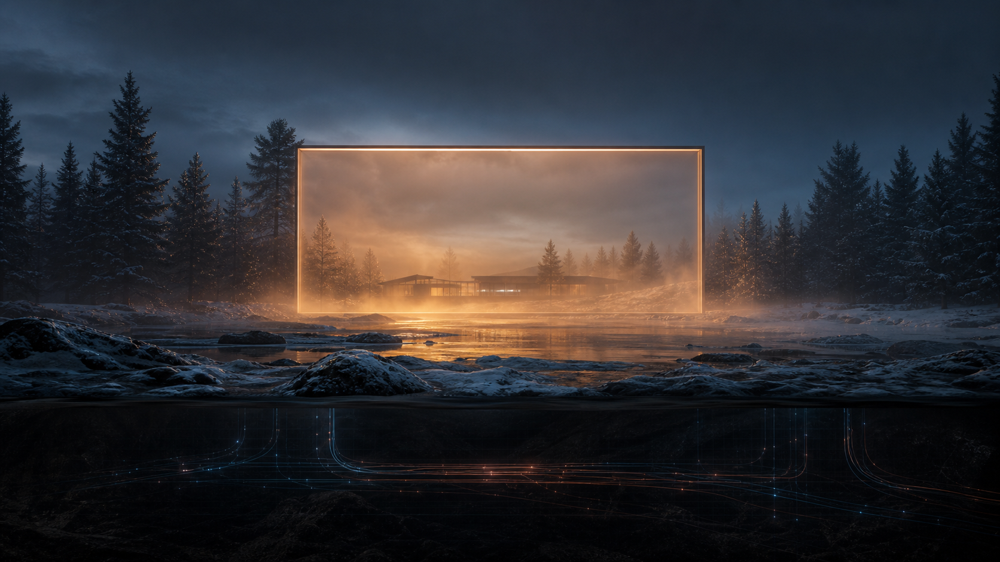

Institution eller plats först?
Yarpie behöver välja om portalen talar som institution, rum eller båda samtidigt.

Det Djupsamiska Näringslivets webbfönster
Det betyder inte att Sverige står utanför dess verkningar.
Portal, inte arkiv
Den här första statiska vågen gör Yarpie till ett rumssystem: öppna fönster, sidor under värme, beslutsväntande signaler och stängda partier. LOMPOLO-CORE ligger under ytan som intern motor.
Första vågen
Portalen, Orrengonjo Jarpie och besökskänslan.
öppet fönster Det Djupsamiska NäringslivetSystemet under Sverige, utan att översättas till vanlig marknad.
under värme StorbastutingetBeslut, rådslag, protokoll och frågor som ännu inte får svar.
under värme Framtidsplaner 2040Fyrcykelsplan, succession och långtid.
under värme Ruinradio och signalerLyssningsfönster utan transkription och utan klickbete.
öppet fönster BesöksfönsterPresentation, kontrollerat besök, forskningsfråga eller fel ärende.
Under värme
De här rummen ska finnas i portalens horisont redan nu, men de behöver content, beslut och skydd innan de blir egna sidor.
Signalremsa
Första iterationen visar signalernas funktion. Nästa iteration behöver faktiska signalnotiser, eventkort, protokollfragment och statusrader beställda i content-backloggen.
Human-in-the-loop
Yarpie behöver välja om portalen talar som institution, rum eller båda samtidigt.
Det djupsamiska näringslivet måste bli begripligt utan att bli corporate governance.
Radio och riskmotor behöver kommenterade former, inte rå exponering.
Besöksfönstret måste skilja presentation, sökande, forskning och fel ärende.